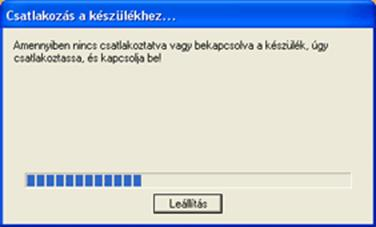
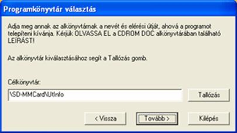
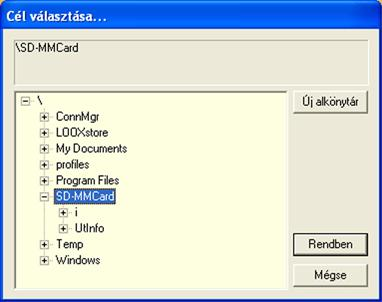
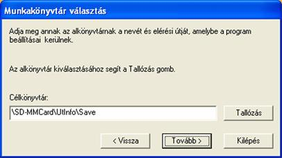
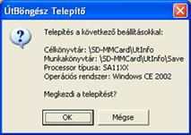
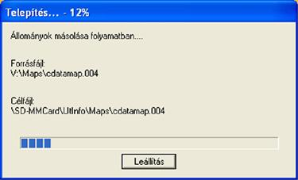

2.1.1. Csatlakoztassa a PDA-t egy asztali számítógépre (RS232
v. USB porton keresztül), a hozzá tartozékként kapott
Microsoft Activesync nevû kommunikációs programmal.
Itt jegyezzük meg, hogy célszerû a www.microsoft.com
web oldalról letölteni az Activesync
program újabb verzióját, mert a régebbi Activesync
program a nagy méretû fájlok átvitelénél igen sok hibát véthet.
2.1.2. Helyezze be
az asztali számítógép CD-ROM meghajtójába az ÚtInfó
CD-t.

- Ha van
kapcsolat akkor a bal oldalon látható ablak kb. 2 másodperc alatt eltûnik.
-
Ha nincs kapcsolat, akkor mindaddig marad ez az ablak, amíg a kapcsolat létre
nem jön, vagy ki nem lépünk a leállítás gombbal.
2.1.4.
A következõ ablakban üdvözli a felhasználókat a telepítõ, továbbá hasznos
információkkal látja el.
-
„Tovább”
gombra kattintva folytatódik a telepítés.
- „Kilépés” gombra
kattintva leállíthatja a telepítést.
2.1.5. Folytatva a telepítést a termék felhasználói licencszerzõdése
jelenik meg egy ablakban.
Kérjük,
hogy figyelmesen olvassa el a szerzõdést!
- „Vissza” gombra kattintva az elõzõ ablakhoz jut.
-
„Tovább” gombra kattintva elfogadja a licencszerzõdést és
a következõ ablakra ugrik.
-
„Kilépés” gombra kattintva leállítja a telepítõ programot.
2.1.6. Az alábbi ablakban a telepítés pontos helyét kell beállítani.

Az
alapbeállításban a telepítõ igyekszik megkeresni a memória kártyát
(pl. SD-MMCard). Amennyiben megtalálja, nyit
rajta egy /ÚtInfo könyvtárat.
Figyelem!
Az összes települést tartalmazó ÚtInfó
program nem fér el egyik PDA memóriájában sem!
-A
„Vissza” gombra kattintva az elõzõ ablakhoz jut.
-A
„Kilépés” gombra kattintva leállítja a telepítõ programot.
Kattintson
rá a memória kártyát (pl. SD Card) jelzõ sorra, majd kattintson az
„Új alkönyvtár” gombra.
-
„Mégse” gombra kattintva az elõzõ ablakhoz jut.
Írja
be az „Új alkönyvtár létrehozása” ablakba a kívánt alkönyvtár
nevet(pl: ÚtInfó).
Nyomja
meg az „OK” gombot és a program a következõ ablakra ugrik.
A
„Cancel” gombra kattintva visszalép az elõzõ ablakhoz.

Jelölje
ki az elõzõleg megadott alkönyvtár nevet majd a „Rendben”
gombra kattintva lépjen tovább.
-
„Mégsem” gombra kattintva leállítja a telepítõ programot.
2.1.7. Munkakönyvtár választása

Ebbe
az ablakban a telepítõ a munkakönyvtárakat állítja be, ahová az ideiglenes
fájlokat helyezi el.
Célszerûen
hagyja az alapbeállításokat.
2.1.8. Az alábbi ablakban a telepítõ véglegesíti a program telepítésének
helyét.

-
„OK”gombra kattintva folytatódik a telepítés és elkezdõdik
a program másolása.
-
„Mégse” gombra kattintva visszatér az elõzõ ablakhoz.

2.2.1. Kapcsolja be a PDA-t. A START
menüben kattintson a PROGRAMS csoportra, a csoporton
belül keresse meg az "UtInfo"
programot (piros-fehér csillag ikon), rákattintva indítsa el.
2.2.2. A program azt fogja üzenni, hogy "A
KÓD NEM TÛNIK VALÓSNAK", kattintson az "OK"
fülre.
2.2.3. A megjelenõ ablakban lévõ adatait a www.terkeptar.hu
honlap Magyarország UtInfó/Regisztráció menüjébe
lévõ https://utinfo.terkeptar.hu/aktival.cgi címre
kattintva, a megfelelõ sorokba be kell írni, majd a Regisztráció
fülre kattintva megkapjuk a program aktiváló kódját. Az aktiváló kódot telefonon,
az "ÚtInfó hot-line"
(0-61)329-1842-es számán is el lehet kérni.
2.2.4. Ezt a kódot a PDA-ba a jobb
alsó sarkába lévõ ikonra (billentyûzet) kattintva lehet beírni. [A begépelés közben figyeljen oda az o (o betû) és a
0 (nulla) közötti különbségre!] A kicsi és nagybetû nincs megkülönböztetve.
A kód beírása után kattintson az „Aktiválás” fülre.
2.2.5. Sikeres aktiválás esetén megjelenõ ablakban kattintson
az „OK” fülre,és kb. 10 másodperc
töltési idõ után elindul a program.
2.3.1. Helyezze be az asztali számítógép CD-ROM meghajtójába
az ÚtInfó CD-t.
2.3.2. Csatlakoztassa az SD memóriát az írójába.
2.3.3. Valamilyen fájlmenedzserrel (Windows intézõ, TC stb.),
hozzon létre egy ÚtInfó nevû alkönyvtárat a SD kártyán.
2.3.4. Másolja a CD-ROM gyökerében lévõ BMPS
, DATAS, NET könyvtárat az SD kártyán megnyitott ÚtInfó könyvtárba.
2.3.5. Az SD kártyán lévõ ÚtInfó
könyvtárban hozzon létre egy MAPS, és egy SAVE nevû alkönyvtárat, és másolja bele a CD-ROM MAPS könyvtárában
lévõ
cdatamap.oo1
cdatamap.oo2
cdatamap.oo3
cdatamap.oo4
cdatamap.oo5
cdatamap.oo6
cdatamap.oo7 fájlokat.
2.3.6. Másolja a CD-ROM MAIN könyvtárába lévõ
splash.bmp fájlt a
az SD kártya UtInfo könyvtárába.
2.3.7. Másolja a CD-ROM MAIN/CE alkönyvtárban
lévõ utinfo.exe fájlt a az SD kártya
UtInfo könyvtárába.
Vegye
ki az íróból az SD kártyát és helyezze be a PDA-ba.
Kapcsolja
be a PDA-t.
Hozzon
létre egy UtInfo ikont a programok csoportban.
2.4.1. Kattintson a START menüre, a legördülõ ablakban a
PROGRAMS csoportra, és indítsa el a File
Explorer programot.
2.4.2. A File Explorer
programban a kis PDA ikon melleti nyíllal tallózza
fel a My Device\Storage
Card\UtInfo könyvtárat (esetleg Storage Card2 is lehet).
2.4.3. Kattintson rá a UtInfo (elõtte piros-fehér
csillag ikon) programra úgy, hogy közben folyamatosan nyomva tartja a mutatópálcát.
2.4.4. A megjelenõ legördülõ ablakban kattintson a copy parancsra.
2.4.5. Tallózza fel a My
Device\Windows\Start Menu
könyvtárat, és az üres helyen tartsa hosszan lenyomva a mutatópálcát.
2.4.6. A legördülõ ablakban kattintson a Paste
Shortcut parancsra
.
2.4.7. A neve a programnak Shortcut
to Utinfo lesz. Amennyiben ezt
a nevet meg akarja változtatni, tartsa hosszan lenyomva a mutatópálcát a néven,
a legördülõ ablakban kattintson a Rename
parancsra, és a megjelenõ ablakban törölje ki a nem kívánt (Shortcut
to) szövegrészt.
A telepítési idõ kb. 20 perc.
A
program aktiválása megegyezik a 2.3.
pontban leírttal.